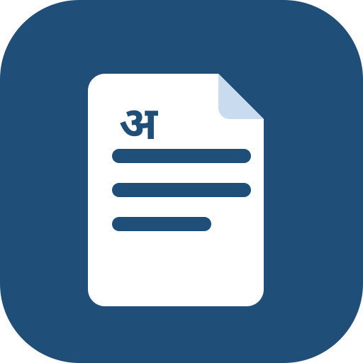
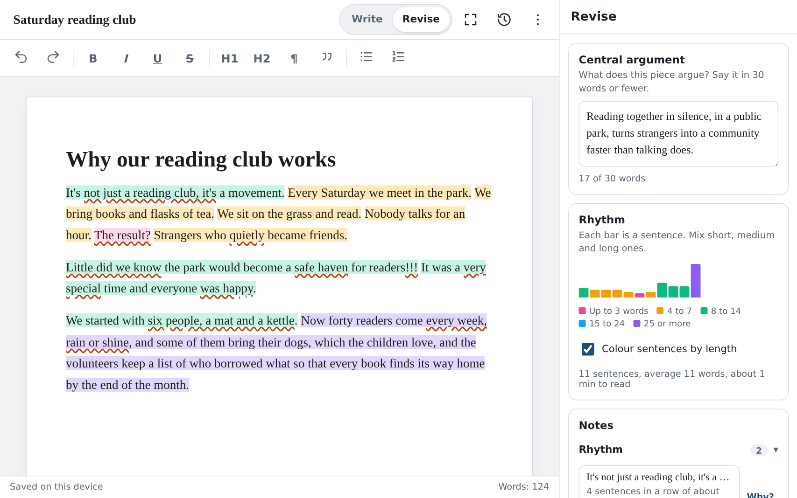

InkstandWrite your first draft with nothing in the way. When you're done, tap Revise. Inkstand then shows you, in colour and in plain words, where your writing could be clearer.
People have been writing, crossing out and trying again for thousands of years, in every language and with whatever was to hand. Inkstand is a small tribute to all of them, and a place for you to join in.
Type whatever's in your head. A messy first draft is fine, and Inkstand won't interrupt you. It saves as you type, so there's no Save button to remember.
Tap Revise when you're done. Each sentence gets a colour, and small notes appear next to places that might be worth a second look.
Happy with it? Save a copy as a Word document, a web page or plain text, and send it wherever you like.
Think of it as a friend reading over your shoulder. It doesn't rewrite anything for you. It points, and you decide.
Every sentence is coloured by how many words it has:
When a whole paragraph is one colour, every sentence is about the same length, and reading it feels like hearing one note played over and over. Mix short and long sentences and your writing starts to sound like music.
A box at the top asks: what is this piece really saying? Try to answer in 30 words or fewer. A counter keeps track for you.
If you can't fit it in, the draft is probably trying to say too many things at once. That's useful to know, and it tells you where to start.
Notes point out tired phrases everyone has heard before, vague words like "very" and "nice", feelings you named instead of showing, punctuation slips, and the habits that make writing sound like a machine wrote it.
Each note is a question. If you meant it, keep it. Tap Why? on any note for a short explanation in plain words.
Here's Revise on a tablet. The draft is on the left with its colours. Your main point, the rhythm chart and the notes are on the right.

Everything you write is kept on your own phone or computer. Nothing is sent over the internet, there's no account to make, and nobody else can read it, me included.
After your first visit, Inkstand works even with no internet at all: on a plane, in the hills, or when the signal drops.
Stay in Write until the whole piece is down, even if it's rough. There's no point polishing a sentence you might delete later.
Before reading any notes, fill in the main-point box. If it won't fit in 30 words, fix that before anything else.
That's where the writing feels flat. Split one long sentence in two, or join two short ones.
The notes come from simple rules, not from an AI, and they can't know what you meant. If it's on purpose, leave it.
On a tablet or computer, Focus fades everything except the paragraph you're writing. Press Esc to switch it off.
Inkstand keeps a copy when you leave or switch pieces. Press Ctrl+S (⌘+S on a Mac) to keep one yourself. The clock button takes you back.
Your writing lives in this browser on this device. If you clear the browser's data, it's gone. Save copies of anything important.
Open Inkstand, then choose Add to Home screen in your browser's menu. It then opens like any other app.
Inkstand speaks English, हिन्दी, বাংলা, मराठी, தமிழ், తెలుగు, ગુજરાતી, ಕನ್ನಡ, മലയാളം and ਪੰਜਾਬੀ. It opens in your phone's language when it can, and you can change it any time in Settings.
Sentence colours and punctuation notes work in all of them. Notes about word choice only understand English for now.
More questions? The step-by-step guide walks through every button.
Open it, start typing, and tap Revise when your draft is done.